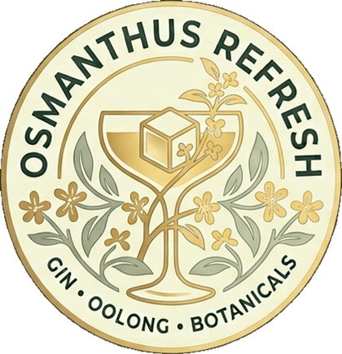
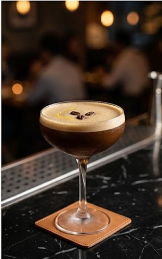
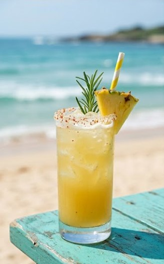

張騏驛
調的是飲料，玩的是平衡。
d15403017@ems.npu.edu.tw關於我
澎湖科技大學
餐旅管理系 · 在學
- 飲料調製
- 味道平衡
- 視覺美感
作品
-

濃縮馬丁尼Espresso Martini
基酒 · 琴酒
義式濃縮、咖啡力嬌酒、琴酒。整杯的重點是表面那層奶泡 —— 太厚像飲料，太薄留不住咖啡的香。搖到剛好為止。
-
桂花烏龍琴酒Osmanthus Oolong Gin
基酒 · 琴酒
桂花烏龍茶、琴酒、蘇打水。用烏龍的焙香去接桂花的甜，糖量減到一半，讓茶味留在前面。高球講究的是比例，不是花招。
-

澎湖鳳梨海鹽Penghu Pineapple Sea Salt
基酒 · 龍舌蘭
西嶼鳳梨的甜，配上龍舌蘭的煙燻。海鹽是這杯的關鍵 —— 少一點就只是鳳梨汁，多一點就發鹹。慢慢喝，甜會被鹽拉回來。